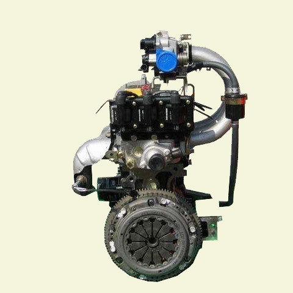

Данная модель двигателя от известного производителя машиностроения CHERY (КНР). Chery входит в список «10 лучших инновационных предприятий Китая», являясь единственным автопроизводителем, получившим высокий титул не только в Китае, но и во всем мире. Двигатель Chery SQR 372 используется в производстве снегоболотоходов: Пантера, Montero, ХВН 8Х8, Мини джипах: Discovery Classic и Discovery Sport, а так же в различных багги и авто. Также данная модель двигателя используется в производстве собственных снегоболотоходов и багги. Двигатель удобен в эксплуатации и не требует больших затрат в осуществлении ремонта и замене запасных частей.
